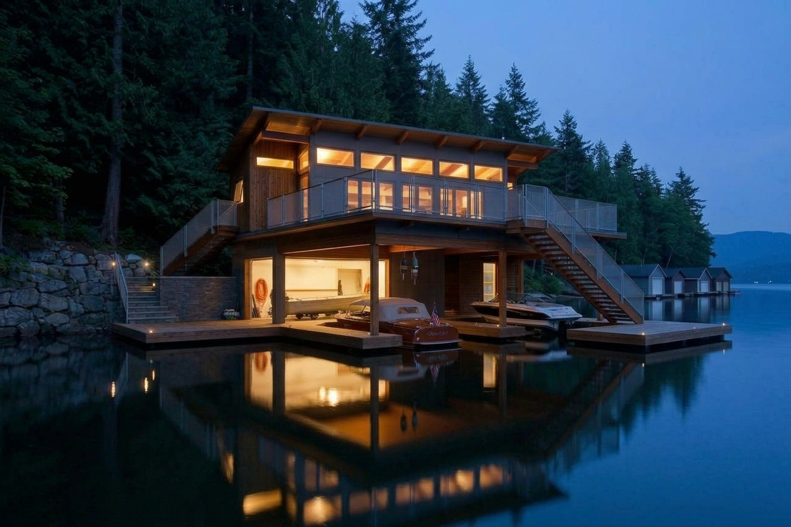
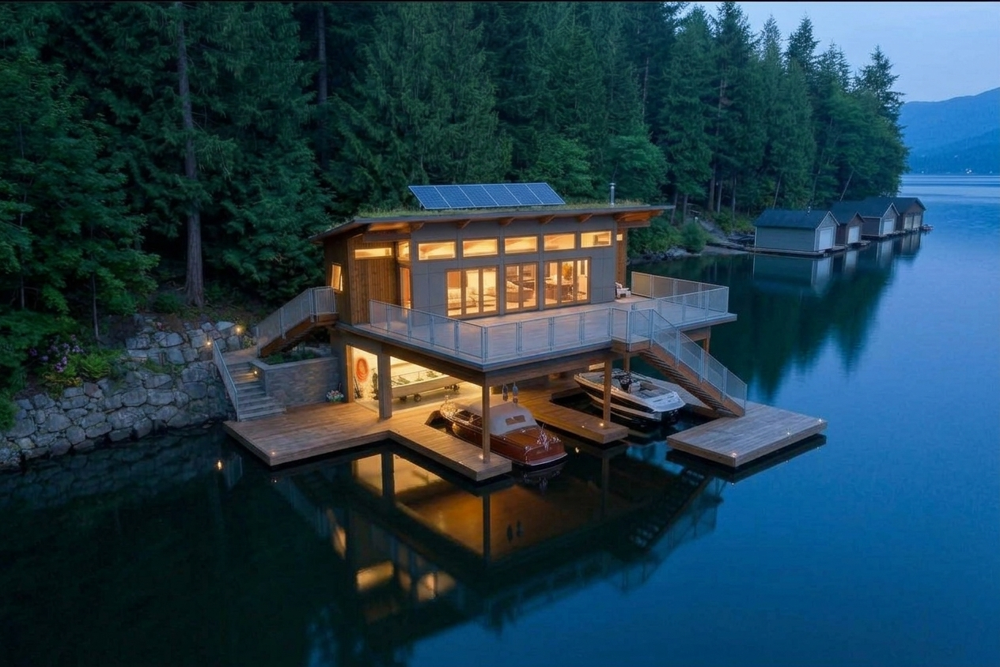
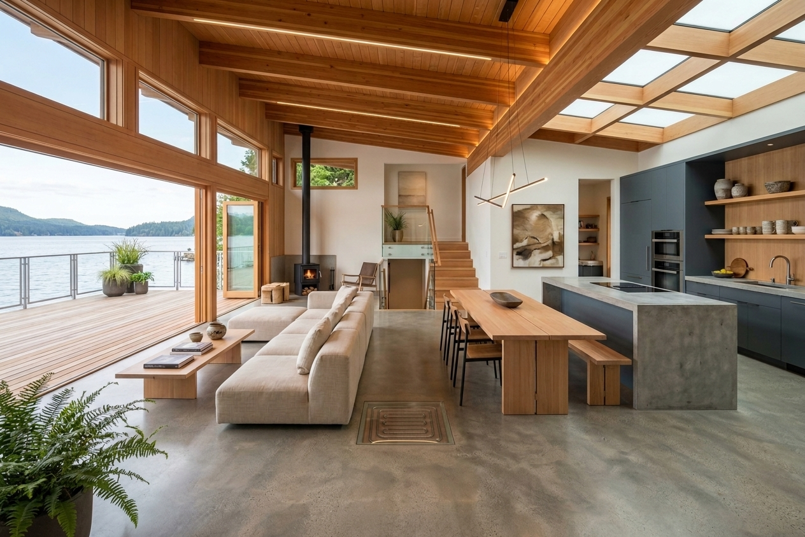

Custom Home · Boathouse with Living Quarters · 2025
A boathouse with living quarters above, set on the docks of Lakecrest Harbor, Michigan — where waterfront utility meets the comfort of a custom home. The lower level shelters boats and gear; the upper level is a light-filled residence framed by water on every side.
Lakecrest Harbor, Michigan
Boathouse with living quarters above
2025
Full architectural design & builder coordination
Exterior and interior views.



The Boathouse was designed for a family whose life revolves around the water. Set on the docks of Lakecrest Harbor in Michigan, the building does double duty: the lower level is a working boathouse — open to the harbor, sheltering boats, gear, and the daily rhythm of lake life — while the upper level is a fully appointed residence with panoramic views across the water.
The design responds to its setting at every turn. Large windows and a waterside deck on the upper level frame the harbor like a living painting, while the lower level's wide openings allow boats to slide in directly from the channel. Materials were chosen for their relationship to the waterfront: cedar siding that will weather gracefully, marine-grade stainless hardware, and a standing-seam metal roof that sheds the heavy lake-effect snows of a Michigan winter.
Inside the living quarters, the palette is warm and restrained — white oak floors, natural stone countertops, and a fireplace that anchors the open-plan great room. Every detail was modeled in BIM and reviewed in 3D with the clients, so they could see exactly how the residence would sit above the boathouse, how the light would move through the day, and how the two levels would work together as a single home on the water.